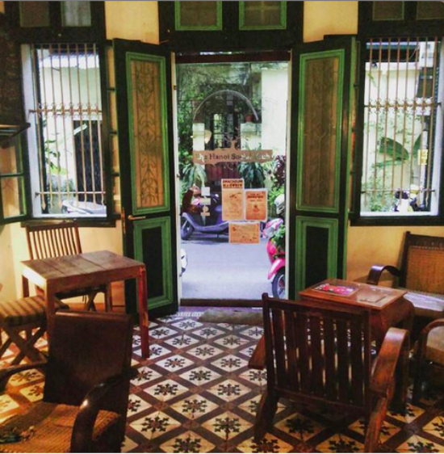

Today, Im going to share with you an interesting public place where I really enjoy going to hang out with my close friends in my spare time, which is a lovely cafe named The Hanoi Social Club.\n\nIt is situated at Hoi Vu alley a small quiet lane near Hang Bong Street in the center of my hometown. The coffee house is decorated in an old, traditional French style, with a lot of paintings on the wall, and it attracts a lot of foreign customers. As a full-time student, I have been so caught up in my studies, therefore, I just take a day off to go there on weekends after a long stressful week.\n\nThere are many live music events taking place there performed by acoustic guitarists, so I often check them out on the internet and come with my friends. Because this type of music is my kind of thing, I am in my element just humming the tune of the songs and relaxing in a comfy chair to enjoy myself.\n\nThe fast food tastes quite savory and especially the coffee in The Hanoi Social Club is always irresistibly delicious. That might be the reason why it was ranked among the top 5 best coffee shops in Vietnam in 2015. What I really love is how cozy the atmosphere is, something which I have not found in any other coffee shop yet.\n\nWhenever things go wrong, I often go there as a hideaway to escape from all the pressures and order a cup of coffee to relieve my stress. It always works wonders. I find it extremely therapeutic and soothing. Therefore, it's more than likely that I will still keep coming back to it as my favorite place in the near future.\n \n\n\n"